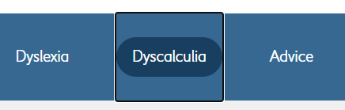
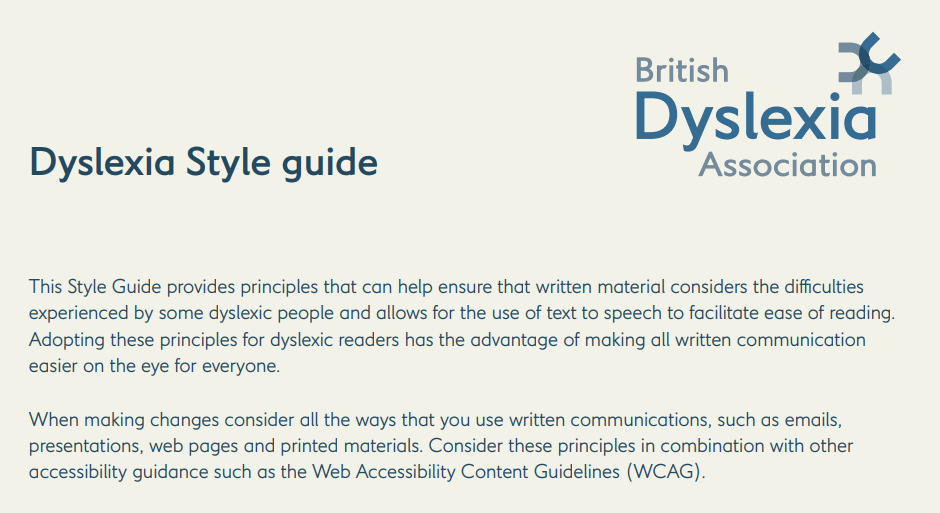
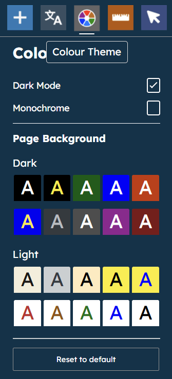
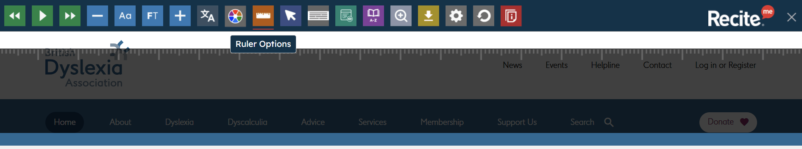

Skip to one of these sections...
BDA's Home Page
The British Dyslexia Association (BDA) is another website geared towards accessibility – specifically dyslexia. They work to achieve a dyslexia-friendly society.
Are there any design decisions they could make differently? Let’s take a look at what they already do to ensure inclusivity.
Fig. 1 – BDA’s “skip to main content” button in the top left of their Home.
Much like SCOPE, there is a “skip to main content” button (Fig. 1) as soon as you start navigating the website with your keyboard. A very helpful element!
Fig. 2 – “Dyscalculia” highlighted obviously on the navigation bar.
Also, their highlighting of the navigation bar when tabbing is very obvious as the buttons themselves change to their hover states (Fig. 2).
Fig. 3 – Some cards from BDA’s Home to showcase the fonts.
Being a dyslexia friendly website, it only makes sense that they use dyslexia friendly fonts. They use “LDN Kono BDA”, which is round and simple, making it easy to read.
Fig. 4 – BDA’s Dyslexia Style Guide.
They have a “Dyslexia Style Guide” (Fig. 4) on their website that informs us on their font choices, among other things, and shows us how we can be designing with dyslexia in mind. (Take a look at the Style Guide!)
Fig. 5 – BDA’s “Recite Me” toolbar at the top of the page.
They incorporate the use of a software called “Recite Me”, which allows users to have the content on the page read out to them (Fig. 5). This is beneficial for dyslexic users of course, but for visually impaired ones too.
Fig. 6 – Colour theme options from the toolbar.
Fig. 7 – A ruler in action from the toolbar.
The toolbar allows users to increase / decrease text size, change the colour scheme (Fig. 6), cursor size, use a ruler (Fig. 7), among other things.
This toolbar seems specialised for dyslexic users, however it has elements that help people with a range of abilities too.
The only thing I can think to mention is that this website could be more adventurous with its design decisions as it is not very visually appealing. However, it is a very specialised website and is a good example of the fact that accessibility is often more important than design.
It would defeat the website’s point to change up the design.
The British Dyslexia Association is dedicated specifically to dyslexia, and all of its accessibility elements are tailored to this. However, many of these accessibility considerations are helpful to different types of users too!
There are lots of helpful resources on this website for designers wanting to be more inclusive to dyslexic users, so I would recommend having a look at their “Advice” page.